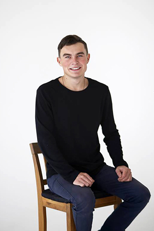
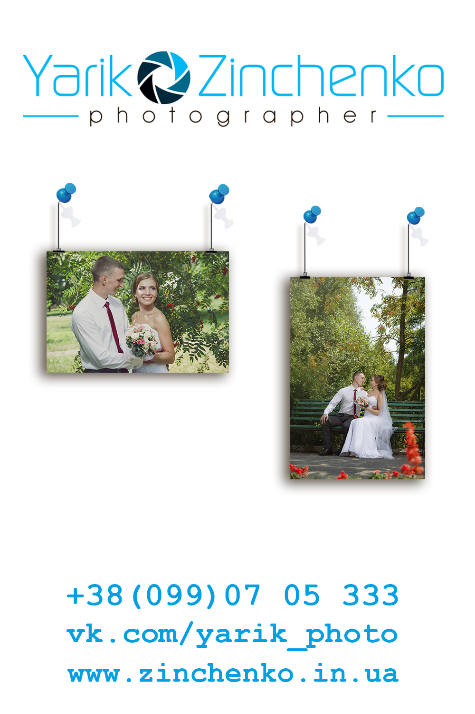

Мої роботи
Науковці визначають фотографію як сукупність об'єктів з технологією, яка дає зображення за допомогою світла. Але для всіх нас це далеко не просто досягнення науки, а невід'ємна частинка життя. Адже фотографія - це те, що збереже Ваші найважливіші миті назавжди. А хороший фотограф передасть не тільки подію, а й посмішки, сльози, сказані слова та пережиті емоції. Мої фотографії нагадуватимуть щоразу, що кожен прожитий рік був недаремний, і сповнений яскравих емоцій. А сучасні технології дозволять зберегти та переглянути все це на будь-якому гаджеті. Гарантую оригінальну подачу та дбайливе ставлення до кожної хвилини, проведеної над роботою з Вами.

Портфоліо Весілля
Замовлення фотографа на весілля: 0990705333
Портфоліо Фотосесія
Замовлення фотосесії за телефоном: 0990705333

Портфоліо Репортаж
Замовлення фотографа на Ваше свято: 0990705333
Ціни та послуги
Пакет "Преміум" - 5000 грн.
- Кольорова корекція всіх відзнятих фото, кількість фотографій не лімітовано, залежить тільки від інтенсивності знімального процесу, з досвіду – від 800 знімків;
- Укладення договору;
- Зйомка всього весільного дня (не більше 15 годин зйомки);
- Повна ретуш 30 фото;
- Друк фотокниги 25х25 (20 сторінок);
- Друк 30 фото 10х15;
- Запис всіх фото на USB-флешку з дерева, в дизайнерському боксі;
- Робота асистента;
- Ввесь матеріал в дизайнерській упаковці;
- Всі фото зберігаються в мене протягом одного року, у випадку їх пошкодження або втрати.
Пакет "Стандартний" - 4000 грн.
- Кольорова корекція всіх відзнятих фото, кількість фотографій не лімітовано, залежить тільки від інтенсивності знімального процесу, з досвіду – від 800 знімків;
- Укладення договору;
- Зйомка всього весільного дня (не більше 15 годин зйомки);
- Повна ретуш 30 фото;
- Друк 30 фото 10х15;
- Запис всіх фото на USB-флешку з дерева, в дерев'яному дизайнерському боксі;
- Ввесь матеріал в дизайнерській упаковці;
- Робота асистента;
- Всі фото зберігаються в мене протягом одного року, у випадку їх пошкодження або втрати.
Пакет "Оптимальний" - 3500 грн.
- Кольорова корекція всіх відзнятих фото, кількість фотографій не лімітовано, залежить тільки від інтенсивності знімального процесу, з досвіду - від 400 знімків;
- Укладення договору;
- Зйомка від ранку нареченої до першого танцю (не більше 8 годин зйомки);
- Повна ретуш 20 кращих фото;
- Друк 20 фотографій розміру 15х20;
- Запис всіх фото на USB-флешку з дерева, в еко-мішечку з бавовни;
- Ввесь матеріал в дизайнерській упаковці;
- Робота асистента;
- Всі фото зберігаються в мене протягом одного року, у випадку їх пошкодження або втрати.
Пакет "Мінімальний" - 2000 грн.
- Кольорова корекція всіх відзнятих фото, кількість фотографій не лімітовано, залежить тільки від інтенсивності знімального процесу, з досвіду - від 300 знімків;
- Укладення договору;
- Зйомка церемонії, з гостями, прогулянка (не більше 4 годин зйомки);
- Повна ретуш 15 кращих фото;
- Друк 10 фотографій розміру 15х20;
- Запис всіх фото на DVD-диск, в дизайнерському боксі;
- Ввесь матеріал в дизайнерській упаковці;
- Робота асистента;
- Всі фото зберігаються в мене протягом одного року, у випадку їх пошкодження або втрати.
*Замовлення даного пакету доступне з понеділка по п'ятницю.
Відгуки
Шановні клієнти та відвідувачі мого сайту, на цій сторінці ви зможете поділитись враженнями від переглядів моїх робіт,оцінити мене передусім як людину, а вже потім, як фотографа. Якщо нам доводилось вже працювати буду вдячний за оцінку кінцевого продукту і звичайно процесу зйомки. Будьте щирими у ваших відгуках, адже мені дуже важливо знати вашу думку.
|  |  |
Привіт! Мене звати Ярослав, Я - професійний весільний фотограф. Вважаю головним в своїх роботах - показати непідробну щирість і глибокі почуття закоханої пари. Для цього я вибрав для себе стиль художнього репортажу і напів-постановочних кадрів. Я знімаю справжніх людей, які ніжно кохають один одного. У моєму портфоліо, тільки реальні весілля і щирі почуття. Вибираючи мене, Ви отримуєте не мій час, а унікальну історію свого кохання, наповнену романтикою і подіями.
Фотографую здебільшого в місті Київ, але люблю подорожувати і з задоволенням приїду на Ваше свято в будь-яке місто нашої країни та за її межі. Якщо з цього переліку Ви не знайшли те, що Вам потрібно, запитайте мене особисто, я з радістю виконаю Ваше бажання. Ласкаво прошу!
Постійно навчаюся та вдосконалюю свою техніку зйомки та ретуші фотографій. Слідкую за тенденціями весільної фотографії. Беру за приклад роботи кращих весільних фотографів України та світу, але завжди намагаюся працювати в своєму індивідуальному стилі зйомки, також беру за приклад роботи фотографів, які працюють в інших жанрах. Намагаюся не створювати шаблонів і підходити до кожної фотосесії індивідуально.
Переглянути як виглядає весільна фотокнига. Детальніше про вартість послуг. Якщо у Вас виникнуть додаткові запитання звертайтесь за телефоном 099-07-05-333, або в соціальних мережах instagram, facebook та vk.